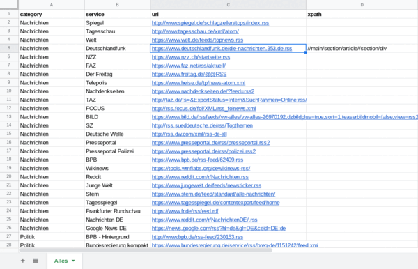

feed.
About
"feed" is a very basic RSS/ATOM feed viewer for your retro-computing
needs. Its aim is to bring modern content to vintage machines that
support only very basic web browsing (e.g. no SSL, JavaScript, CSS,
modern tags...). Therefore, it's intentionally kept very simple.
Features
-
To support browsers with different capabilities, "feed" offers
multiple UIs, from dead simple to.... simple.
-
You can select how much use "feed" should make of images.
-
Original images (JPG, PNG) are color reduced, resized and
converted to GIF for greater compatibility.
-
"feed" tries to give you a preview of the content the RSS links to.
This algorithm is not perfect however, some (important) text
elements could be missing and some redundant elements could still be
in.
Setup
All you need is a TSV file hosted on a server to bring this thing to life.
You can also use Google Sheets in a modern browser to create and "host" a
TSV file:
-
Create a new Google Sheets document (type "sheets.new" into the
adress bar of your modern browser).
-
Create four columns with these names: category, service, url, xpath.
-
Add your RSS/ATOM feeds! Add a "category" name in the first column.
The name of the feed goes into "service", the URL for the feed
in "url" (who would have guessed...). You don't need to put anything
in "xpath" but if you do, "feed" will try to use the provided xpath
to scrape the content from the articles.
-
When you're done, go to "File" / "Share" / "Publish to the
web". Make sure to select "TSV" instead of the default "Webpage".
Publish the document and copy the URL that's shown there.
Store the URL in a way your retro machine can access it, e.g. in
a text file on a floppy disk.
-
Open "feed" in your retro machine's web browser. Paste the URL
to your TSV file in the field "TSV-file URL".
-
Select your choice of UI and options, hit "Go".
-
Happy retro surfing!

Tips
-
All your settings are "stored" in the URL once you've clicked the
"Go" button. By setting a bookmark to the "Categories" page they
are retrieved automatically.
-
You can share a Google Sheet link with other people. By creating
several bookmarks with different sheets you can have multiple
collections of RSS feeds.
-
Using Google Docs you can also have multiple people
work on a feed collection.
Contact
Created by MeyerK 2018ff. You can reach me
under konstantin.meyer at GMail.